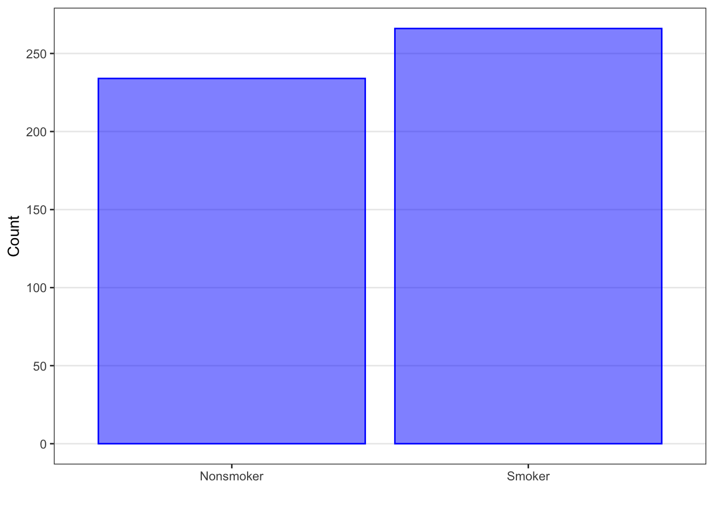
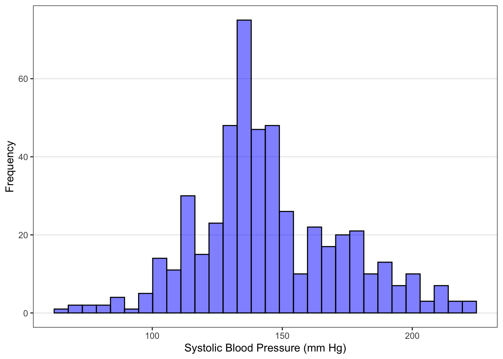
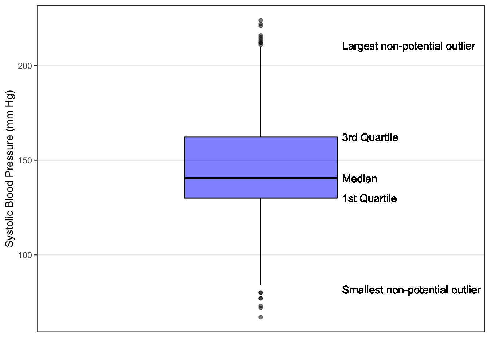

Chapter 2 Variable Types
2.1 Scales of Measurement
There are two broad types of measurement scales: categorical and numerical.
Categorical scales are qualitative. Examples of variables measured on a categorical scale include sex, blood type, race, or disease status. The data at an individual level consist of what category that individual falls into (for example: male or female). The data at the study level are the number of study participants in each category (for example: how many men and how many women were included in the study).
Numerical scales are quantitative. Examples of variables measured on a numerical scale include weight, height, survival time, or blood pressure. Variables measured on a numerical scale will often have measurement units associated with them. For example, a person’s age might be measured in years, or in months, or, for newborns, in weeks or even days. On a numerical scale, the differences between numbers have meaning. The difference between 32 years and 33 years of age has the same meaning as the difference between 85 years and 86 years of age. All variables measured on numerical scales are therefore “interval variables”.
2.1.1 Categorical Scales
Categorical measurement scales can be further divided into nominal scales and ordinal scales.
Nominal scales have two or more categories with no natural ordering. For example, religious affiliation could be described on nominal scale using the categories of Catholic, Protestant, Jewish, Muslim, Hindu, Buddhist, Other. The order of listing the categories is irrelevant. Examples of variables measured on a nominal scale include sex, race, blood type, or marital status.
A binary scale is a special case of a nominal scale, in which there are only two categories, such as “Male”/”Female” or “Child”/”Adult”. The responses to any question with a “Yes”/”No” answer are measured on a binary scale. Common binary scale measurements in medicine and public health include disease status (“Has the disease”, “Does not have the disease”) and diagnostic test result (“positive”, “negative”). (CHRIS - I don’t know if I buy that binary scales are a special case of a nominal scale. Your examples are ordinal).
Ordinal scales have two or more categories that do have a natural ordering. Examples of variables measured on an ordinal scale include Apgar score, tumor stage, Likert-type scale survey questions, or social class. On an ordinal scale, numerical assignments are relative and do not represent any interval relationship between categories. For example, Apgar scores for newborn infants range from 0 to 10, and higher scores indicate better functioning, but the difference between scores of 8 and 9 may not have the same implications as the difference between scores of 2 and 3.
A given variable can be measured using a number of different scales. The measurement scale that is used determines what type of variable it is. For example, smoking status could be measured on a binary scale, as “Smoker”/”Non-smoker”. It could be measured on a nominal scale, as “Ex-smoker”, “Current smoker”, “Never smoked”. It could even be measured on an ordinal scale, such as “Never smoked”, “Quit smoking >10 years ago”, “Quit smoking 1-10 years ago”, “Quit smoking within the last year”, “Current smoker”. Smoking status could even be measured on a numeric scale by measuring the number of years a person smoked, or the number of years since they quit smoking.
The type of variable, in turn, determines which summary, plotting, and analysis methods are appropriate.
Categorical data is typically summarized in tables using the numbers (or counts or frequencies) and proportions (or percentages) of study participants in each category.
Appropriate plots for categorical data include bar graphs and pie charts, which help the reader to visualize the number or proportion of study participants in each category.
Summary statistics and plots are described in more detail later.
We will explore a number of statistical analysis methods that are appropriate for categorical data in this book. These include the use of confidence intervals for estimating a single proportion, methods for comparing proportions in two groups, including confidence intervals for relative risks or odds ratios, and methods for comparing proportions in two or more groups, including Chi-square test, binomial exact test, or Fisher’s exact test.
2.1.2 Numerical Scales
Numerical measurement scales can also be further divided, into continuous scales and discrete scales.
Continuous scales describe characteristics that can take on any real number value, such as 98.7 or 52.63 or 0.014. Examples of variables that are measured using continuous scales include blood pressure, temperature, age, weight, or height.
Discrete scales describe characteristics that can have only integer values. Examples of variables that are measured using discrete scales include the number of children in a family, the number of births in a year, or the number of accidents in a month.
Continuous measurement scales can be further divided into interval scales and ratio scales.
On an interval scale, the intervals or differences between values have the same meaning throughout the scale (as is true for any numeric scale), but the zero of the scale doesn’t mean “none” of the quantity of interest. For example, temperature is commonly measured on an interval scale (degrees C or degrees F). The difference between 32F and 33F has the same meaning as the difference between 97F and 98F; however, 0˚F does not mean “no temperature”. As a result, it would make no sense to compute or interpret ratios of temperatures. If the high temperature today in Phoenix, Arizona, is 80F and the high in Nome, Alaska, is 40F, it does not mean that Phoenix is twice as hot as Nome.
On a ratio scale, both the differences between values and the ratios of values make sense. For example, weight is measured on a ratio scale. The difference between 10 kg and 11 kg has the same meaning as the difference between 35 kg and 36 kg. Furthermore, 0 kg means “no weight” so it makes sense to compute weight ratios. Something that weighs 50 kg is twice as heavy as something that weighs 25 kg.
Continuous data is typically summarized in tables using means and standard deviations, or medians and ranges or inter-quartile ranges. If the variable is a ratio variable, reporting the coefficient of variation (CV) is also appropriate.
Appropriate plots for continuous data include dot plots, box plots, histograms, and scatterplots (for comparing two continuous variables).
Summary statistics and plots are described in more detail later.
In this book, we will explore a number of statistical analysis methods that are appropriate for continuous data. We will cover the use of confidence intervals to estimate a mean, confidence intervals or t-tests to compare two means, and analysis of variance (ANOVA) to compare three or more means. We will cover using correlation and simple linear regression to explore relationships between two continuous variables. We will also learn how multiple linear regression is used to model the relationship between a continuous outcome and multiple possible predictors (including treatment or exposure), and to adjust for potential confounding factors.
One important note: there are relationships between numerical and categorical scales that can sometimes make it tricky to determine what kind of measurement scale is being used.
A variable measured on a numerical scale can be converted to a variable measured on a categorical scale. This may be called “categorizing” the variable. For example, age can be measured on a continuous numerical scale, in years. It can also be categorized by dividing the continuum of years into age group, such as “0-5 years”, “6-10 years”, “11-19 years”, “20-39 years”, “40-59 years”, “60-79 years”, and “80+ years”. Age group, in this case, is an ordinal categorical variable. Age could also be categorized by dividing the continuum into two groups, such as “child” and “adult”. In this case, age group is a binary nominal categorical variable.
A variable measured on a categorical scale can be coded numerically. For example, the ordinal variable social class could be coded numerically as 0=Lower class, 1=Working class, 2=Lower middle class, 3=Upper middle class, 4=Upper class. It is important to remember that coding categorical data using numbers does not make the data numeric. The codes simply represent the names of the categories.
The nominal variable religious affiliation could be coded numerically as 1=Catholic, 2=Protestant, 3=Jewish, 4=Muslim, 5=Hindu, 6=Buddhist, 7=Other. Remember that coding religious affiliation numerically does not make it into an ordinal variable; there is no inherent ordering to the religious affiliation categories.
Let’s look at a real example. The Blood1 dataset in the Stat2Data package contains measurements of three variables related to blood pressure, taken on 500 adults.
The variable SystolicBP is the systolic blood pressure measured for each person, in millimeters of mercury (mm Hg). The variable Smoke is the smoking status recorded for each person, labeled a “1” if the individual was a smoker or a “0” if the individual was not a smoker.
The variable Overwt is the weight group recorded for each person, labeled a “0” if the individual was in the normal weight range, “1” if the individual was overweight, and 2 if the individual was obese.
| SystolicBP | Smoke | Overwt | |
|---|---|---|---|
| 1 | 133 | 0 | 2 |
| 2 | 115 | 1 | 0 |
| 3 | 140 | 1 | 1 |
| 4 | 132 | 0 | 2 |
| 5 | 133 | 0 | 1 |
| 6 | 138 | 0 | 1 |
| 7 | 133 | 0 | 2 |
| 8 | 67 | 0 | 0 |
| 9 | 138 | 0 | 0 |
| 10 | 130 | 1 | 0 |
The data for the first ten participants in the Blood1 dataset are shown in Table 2.1. Let’s examine these variables one by one.
The first variable listed is systolic blood pressure, SystolicBP. This variable is numeric because the values are numbers and have units of measurement. Blood pressure is typically reported to the nearest one millimeter of mercury, as here, but it is nevertheless a continuous variable, since you could have a blood pressure of 138.2 mmHg or 74.5 mmHg. Furthermore, blood pressure is measured on a ratio scale, since a blood pressure of zero mmHg means no pressure, and a blood pressure of 140 mmHg means there is twice as much pressure as a blood pressure of 70 mmHg. The SystolicBP variable in this dataset is therefore a numeric, continuous, ratio variable.
The second variable listed is smoking status, Smoke. This variable is categorical, since it tells you which category the person falls into: smoker or non-smoker. The data happen to be coded here as “1” for smoker and “0” for non-smoker, but it is not numeric data. The data could just as well have been coded “Y” for smoker and “N” for nonsmoker, or even as the words “smoker” and “nonsmoker”. This variable is not ordinal. While you may feel that not smoking is better than smoking, there’s no inherent ordering to the two categories. Finally, this variable is binary, since it has only two categories, smoker and non-smoker. The Smoke variable in this dataset is therefore a categorical, binary variable.
The third variable listed is weight status, Overwt. This variable is categorical, since it tells you which category the person falls into: normal weight, overweight, or obese. The data happen to be coded here using the numbers “0” for normal, “1” for overweight, and “2” for obese, but they could just as well have been coded “1”, “2” and “3”, or “10”, “50”, and “300”, or “A”, “B”, and “C”, or even as the words, “normal”, “overweight”, and “obese”. This variable is ordinal, since there is an inherent ordering to the categories that matches the numbers: overweight feels like it’s “in between” normal and obese, just as “1” is between “0” and “2”. Note that there is an order to the categories, but not a magnitude: there is no sense that obese (coded “2”) is twice as much weight as overweight (coded “1”); and there is no sense that normal (coded “0”) means “no weight”. This variable is not binary, though, since there are more than two categories. The Overwt variable in this dataset is therefore a categorical, ordinal variable.
One further note about the Overwt variable. It is likely that this variable was derived from a body mass index (BMI) measurement by choosing cut-points: for example, perhaps normal was set as BMI values of 24.9 or below, overweight as BMI values of 25.0 to 29.9 and obese as BMI values of 30.0 or more. This is an example of “categorizing” an underlying numeric variable.
2.2 Summarizing Data
2.2.1 Categorical Data
Recall that categorical variables are variables that are qualitative, and can be either nominal or ordinal.
In the Blood Pressure example, there were two variables in the dataset that were categorical: Overwt and Smoke. We summarize categorical data by:
The number of observations in each category, which we find by simply tallying the number of observations in that category. The proportion of observations in each category, which we find my taking the number in each category and dividing by the total number of observations in the study. These proportions will be a value between 0 and 1.
The percentage of observations in each category, which is the proportion multiplied by 100, followed by a percentage sign.
While not required, it often helps to summarize the data in a table.
Let’s go through an example to see how these summary measures work, using the smoking status variable from the Blood Pressure example.
Of the 500 participants, 266 were smokers and 234 were nonsmokers. In this dataset, we see that there are more smokers than nonsmokers.
It is appropriate to compare two numbers, or counts, when the denominator is the same or very similar. But, for example, if we were comparing the number of smokers between males and females and the total number of males and females was different (for example, 100 males vs. 50 females), it would not be appropriate to compare the counts of smokers between males and females.
Rather, it is more appropriate to compare groups using proportions and percentages. In the Blood Pressure dataset, the proportion of smokers is 0.532, or 53.2% of the individuals are smokers, and the proportion of nonsmokers is 0.468, or 46.8% of the individuals are not smokers. (Note: Percentages are more common in reports and articles, and may be reported without the percentage sign next to the number. If this happens, authors will often denote somewhere in the table that the number represents a percent.)
Pie charts are one way that we can graphically represent categorical data. Pie charts allow us to visualize the differences between proportions in the various categories. To create the pie chart, we need to know the proportion or percentage in each category.
In the Blood Pressure example, we saw that there were about as many smokers as nonsmokers, with slightly more smokers. We can visually see that in the pie chart as well; it looks like the “smoker” piece of the pie has more than the “nonsmoker” piece. However, it’s not exactly clear how much more.
## Insert pie chartBecause of this issue with pie charts (the difficulty in comparing slices and estimating percentages), statisticians tend to prefer other graphical methods for categorical data.(CHRIS - There’s perception studies about this)
A better graphical summary for categorical data (and the one preferred by many statisticians) is the bar plot. The bar plot can be used with any summary measure: number, proportion, or percentage. Bar plots are often arranged so the categories are on the x- (horizontal) axis and the summary measure is on the y- (vertical) axis; however, the opposite arrangement can be used as well (i.e., categories on y-axis and summary measure on x-axis).
As with the pie chart, we can see which categories contain more participants and which contain fewer: the taller bars occur for the categories with more participants (or a higher proportion) and the shorter bars indicate the categories with fewer participants. Unlike the pie chart, the y-axis tells us the number or proportion for each category. As a result, we get both the visual comparison and the actual value.
As we did with the pie chart, we can visually see that there are more smokers than nonsmokers. However, we can also see the approximate numbers in each category: there are about 30 more smokers than nonsmokers.
library(ggplot2)
Blood1$smoke.f <- ifelse(Blood1$Smoke == 0, "Nonsmoker", "Smoker")
Blood1 |>
ggplot(aes(smoke.f)) +
geom_bar(fill = "blue", alpha = .5, col = "blue") +
xlab("") +
ylab("Count") +
theme_bw() +
theme(panel.grid.minor = element_blank(),
panel.grid.major.x = element_blank()) +
scale_y_continuous(breaks = seq(0, 260, 50))
2.2.2 Numerical Data
There are many different ways to summarize numerical data. The most common summaries are measures of center (such as means or medians) and measures of spread (such as standard deviations or interquartile ranges). In addition, we typically want to note any extreme or unusual observations in the data.
If we wanted to pick one number to represent a set of data, we’d probably want to pick the value that indicates the center or central tendency of the data values, or the one that is a “typical” or average value.
However, we know that there will (most likely) be variability in our data. That is, not all of the values will equal each other. So, the measure of center should not be our only summary measure for numerical data. We are also interested in how spread out, or how varied, our data values are from one another. We do this by computing measures of spread.
There are other summary measures that we may compute as well to understand our data, such as percentiles or the minimum or maximum.
Finally, we want to note if there are any observations that are very different or unusual from all of the other observations in the sample.
2.2.2.1 Measures of Center
2.2.2.1.1 Mean
Some measures of center use the values of the variable. The individual values in the sample are denoted as \(x\) with a subscript \(i\), where \(i\) runs from 1 to the number of observations in our data. For example, the first observation is \(x_1\), the second observation is \(x_2\), and so on. The mean (or average) value, noted as \(\bar{x}\) (pronounced x-bar), is the result of adding up all the individual values, \(x_i\), and then dividing by the number of observations in our sample, denoted by \(n\).
\[ \bar{x} = \frac{\Sigma x_i}{n} \] In our Blood Pressure example, when we add up the blood pressure measurements for all 500 adults and divide by 500, we get a mean value of 145 mm Hg.
Note that the mean is calculated using all values in the dataset. If there is one observation or several observations that are much higher or lower than the rest of the data, it will raise or lower the mean more than it would if those observations were similar to the rest of the data.
2.2.2.1.2 Median
Sometimes, it makes more sense to summarize the data by the order as opposed to by the value. Why? Because sometimes there are data points that are so different from the rest that they overly influence the mean. For example, let’s say our data points were 1, 2, 3, 4, and 100. If we took the average of these 5 data points, we would get the value 22. But does 22 seem to be typical? Or the center value? It is a lot higher than four of the values and much much lower than the fifth. It doesn’t seem to represent any portion of the data very well.
One of the features of numerical data is that you can put it in order from smallest to largest. Let’s take advantage of this additional feature of numerical data to create different summaries for the typical value and the spread of the data.
When we order the observations from smallest to largest, there will be a middle value. The median is the value of the middle observation in the dataset. (If there are an even number of observations in the dataset, then the median is the average of the two middle values.) The median is also referred to as the 50th percentile because 50% of the observations are below the median and 50% are above the median.
For the Blood Pressure dataset, if we order the observations from smallest to largest, the middle observation would be between the 250\(^{th}\) and 251\(^{st}\) observations (because there are an even number, 500, of observations in this dataset). When we average these two values, we get a median of 140.5 mmHg, which is similar, but not the same, as what we calculated for the mean.
Note that the median is calculated using only the middle value or values. If one observation in the data is much higher or lower than the rest of the data, it will be part of the order of the data, but the value itself is not used to find the median. Therefore, observations that are very different (either higher or lower) than most of the data do not affect the value of the median.
2.2.2.1.3 Other Measures of Center
Other measures of center that are encountered in the medince and public health include the trimmed mean and the geometric mean.
To calculate a trimmed mean, a specified percentage of the highest and lowest values for that variable are excluded before calculation of the mean. For example, the 10% trimmed mean would exclude the highest 10% and lowest 10% of the observations and then a mean would be calculated based on the included observations (the middle 80% of the data). This makes the trimmed mean less sensitive to those observations that are much higher or lower than the rest of the data.
To calculate the geometric mean, the data are first log-transformed, then the mean is calculated on the log scale, and lastly, the mean is transformed back to the original scale. The geometric mean can be useful for summarizing highly skewed data.
2.2.2.2 Measures of Spread
2.2.2.2.1 Variance and Standard Deviation
One common measure of the spread of numerical data is the variance (or the related measure, the standard deviation).
\[\text{Variance}: s^2 = \frac{\Sigma(x_i - \bar{x})^2}{n - 1}\]
The variance, denoted \(s^2\), is calculated in several steps. The first step is taking the actual value for each observation, denoted \(x_i\), as before, and subtracting the average value, \(\bar{x}\). This difference is called the deviation, \(x_i – \bar{x}\). Values that are far from the mean will give us large deviations, while values close to the mean will give us small deviations. Values that are below the mean will give us negative deviations, while values above the mean will give us positive deviations.
However, we need to pull all these deviations into one number. Note that, because we are subtracting the average, some deviations will be negative and some will be positive. If we simply add up these values, the negative and positive deviations will cancel each other out, and the sum will be zero, which is not a useful measure of the spread of the data. Our goal is to quantify the difference from the mean, but we don’t really care if the value is below or above the mean. One way we could emphasize the difference is to square the difference. Then, the focus is on the size of the difference, as opposed to whether the value is above or below the average. (Note that we could also take the absolute value, but it is easier mathematically to work with the squares of the differences.)
The second step, therefore, is to add up the squares of the deviations for all observations in the sample. This is sometimes called the sum of squares.
The third and last step is to divide the sum of squares by the sample size n - 1, giving a single number called the variance. The variance is a modified average of the squared deviations. We use n - 1 instead of n because it gives a less biased estimate of the variance for all potential participants.
The units for variance are the units of the variable squared. Because of this, it is hard to directly interpret the variance value. We typically take the square root of the variance so that the units of measurement match the original data. When we do this, we obtain the standard deviation. The standard deviation can be interpreted as the average deviation of the observations away from the mean.
\[ \text{Standard Deviation (SD)}: s = \sqrt{s^2} \]
Note that, like the mean, we use all observations in the data to find the standard deviation. So if one observation is much higher or much lower than the rest of the data, it will influence the value of the variance and standard deviation.
Let’s calculate the variance and standard deviation for the Blood Pressure example.
\[s^2 = \frac{(133 - 145)^2 + (115 - 145)^2 + \dots + (180 - 145)^2 + (174 - 145)^2}{500 - 1} = 783.72 \text{ mm Hg}^2\]
We find the deviations between the individual values and the sample mean of 145, square those deviations, add up all the squared deviations, and divide by n - 1, which is 499, and we get a variance of almost 784 mm Hg squared.
\[ s = \sqrt{783.72} = 27.99 \text{ mm Hg} \]
Taking the square root, we find that the standard deviation is almost 28 mm Hg. That is, the average deviation away from the mean for the systolic BP variable is roughly 28 mm Hg.
2.2.2.2.2 Interquartile Range
Another common measure of the spread of numerical data is the interquartile range, or IQR. This measure, like the median, is based on the order of the observations, not on their values.
The interquartile range is calculated from the first and third quartiles of the data and is the range of the middle 50% of the data. The first quartile (or 25th percentile) is the median of the lower half of the data. The third quartile (or 75th percentile) is the median of the upper half of the data. To obtain the interquartile range, we subtract the first quartile from the third quartile.
Note that like the median, we order the data from smallest to largest and focus only on the values for the middle half, from Q1 through Q3. So if one observation in the data is much higher or much lower than the rest of the data, it won’t affect the value of the interquartile range.
Also note that the exact definition of the median, and thus of the quartiles, varies slightly from one software package to another. For small datasets, the median and IQR given to you by software may differ slightly from the values you obtain by hand, but they will be close. For large datasets, the differences will be negligible.
What is the interquartile range for the Blood Pressure data?
The first quartile (the 25th percentile) is the average of the 125th and 126th values, which is 130 mm Hg. The third quartile (75th percentile) is the average of the 375th and 376th values, which is 162.5 mm Hg.
The interquartile range is the difference between 162.5 and 130, which is 32.5 mmHg. This represents the range of values for the middle 50% of the data.
(Note that the IQR for this dataset happens to be a bit bigger than the standard deviation.)
Another useful measure of spread is the range. The range is simply the distance between the minimum (the smallest value) and the maximum (the largest value) in the dataset.
The minimum, 1st quartile, median, 3rd quartile, and maximum comprise the five-number summary, which is often used as a group to summarize data. It gives a sense of the typical value of the data as well as how the values vary (both the middle 50% of the data as well as the whole data range).
Let’s find the range of systolic blood pressure readings from the Blood Pressure example.
- Smallest 5: 67, 72, 73, 77, 77
- Largest 5: 215, 216, 221, 222, 224
- Minimum: 67 mm Hg
- Maximum: 224 mm Hg
We see that 67 mm Hg is the smallest value in the dataset, so it is the minimum. The largest value is 224 mm Hg, the maximum.
\[ \text{Range: } 224 - 67 = 157 \text{ mm Hg} \] The range is 157 mm Hg.
Putting this all together, for the Blood Pressure dataset, the five-number summary for the systolic blood pressure would be:
minimum: 67 mm Hg
Q1: 130 mm Hg
median: 140.5 mm Hg
Q3: 162.5 mm Hg
maximum 224 mm Hg2.2.2.2.3 Other Measures of Spread
Other measures of spread include the mean absolute error and the coefficient of variation.
The mean absolute error (or MAE) is when you use the absolute difference between each observed value and the mean, instead of the squared difference, as used for the variance. You would then add up all the absolute differences and divide by the number of observations in the sample.
The coefficient of variation (or CV) is the sample standard deviation divided by the sample mean, and is usually expressed as a percentage. For example, if the standard deviation is 5 and the mean is 50, then the coefficient of variation is 0.10 or 10%. The sample standard deviation is about 10% as large as the sample mean. The coefficient of variation helps us compare variability for different measurements that have different ranges of values.
2.2.2.3 Other Summary Measures
Other summaries which use the order of the data include finding the observation that has a certain percentage of data below it. This is called a percentile. For example, the 10th percentile is the value in the dataset for which 10% of the sample values are below it (and thus the other 90% of the sample values are above it).
Note that the first quartile, median, and third quartile are all percentiles.
2.2.2.4 Outliers and Robustness
One last important step in describing a set of data is to note observations that are unusually different from the rest of the data. A data value may be much higher than most of the data, or much lower. When a data point doesn’t “fit” with the rest of the data, we call it a potential outlier.
As we have mentioned already, extreme or unusual values can overly influence those summary measures based on value, like the mean and the standard deviation, but have less of an effect on those summary measures based on order, like median and IQR. Summary measures that are not as affected by outliers are called robust statistics.
2.2.2.5 Histograms
Let’s move on to graphical summaries of numerical data. One way to visualize numerical data is with a histogram. The histogram divides the data into groups (or bins) based on their values and graphs the number or frequency in each bin. The observations are often divided into equal size groups (such as 60-79, 80-99, etc.), but this isn’t required. (CHRIS - A histogram, for visualizing purposes only, turns a numerical variable into a categorical one).
For histograms, the data values are plotted on the x-axis and the number of participants for that data value or range are plotted on the y axis.
Histograms (for numerical data) may appear similar to bar plots (for categorical data). There are, however, two big distinctions between histograms and bar plots: There is an inherent order to the values on the x axis of a histogram – we create partitions based on the values in their numeric order, and There is no space between the bars on a histogram. In the bar plot, there is a bit of a space between each bar to indicate that they are just different categories and there is not necessarily an order to those categories. In histograms, the numeric order of the values is maintained.
The advantage to this type of graph is that you can quickly get a sense of any patterns in the data. If the data look evenly distributed around the middle, we refer to the data as symmetric. If we see that the peak or bulk of the participants are to the left, and the number of participants per group slowly decreases to the right, we say the data are right skewed. If we see that the bulk of the participants are to the right and there’s a slow decrease in the number per group to the left, we say the data are left skewed.
The disadvantage is that this type of graph doesn’t give you any summary measures of the data, and doesn’t identify any potential outliers.
Blood1 |>
ggplot() +
geom_histogram(aes(SystolicBP), fill = "blue", col = "black", alpha = .5) +
xlab("Systolic Blood Pressure (mm Hg)") +
ylab("Frequency") +
theme_bw() +
theme(panel.grid.minor = element_blank(),
panel.grid.major.x = element_blank())## `stat_bin()` using `bins = 30`. Pick better value with `binwidth`.
Let’s examine the histogram for the Blood Pressure example, shown in Figure ??. The systolic blood pressure observations are centered in the vicinity of 130 mm Hg, and range from about 60 to 240 mm Hg. Over 1/3 of the people appear to have values between 120 and 140 mm Hg (the tallest peak). There are only a few people with systolic blood pressure below 100 mm Hg or above 200 mm Hg. We would say this data has a slight right skew, because the tail of the distribution is to the right of the bulk of the data.
2.2.2.6 Boxplot
Another way to visualize numerical data is with a boxplot. Boxplots have also been called box-and-whisker plots (see the box and whiskers in the image shown).
To create a boxplot, you use the five-number summary:
- The smallest observation that is not considered an outlier (if no potential outliers, the minimum) marks the end of the bottom “whisker” as shown above.
- The first quartile is the bottom edge of the “box”.
- The median is the line near the middle of the “box”.
- The third quartile is the top edge of the “box”.
- The largest observation that is not considered an outlier (if no potential outliers, the maximum) marks the end of the top “whisker”.
- If there are potential outliers, they are usually plotted as a dot beyond the “whiskers”.
For boxplots, we find potential outliers using the 1.5*IQR rule.
The 1.5IQR rule states that potential outliers are any observations which are either: greater than 3rd quartile + 1.5IQR, or less than 1st quartile – 1.5*IQR.
Blood1 |>
ggplot() +
geom_boxplot(aes(SystolicBP), fill = "blue", col = "black", alpha = .5) +
scale_y_continuous(limits = c(-1, 1), breaks = NULL) +
xlab("Systolic Blood Pressure (mm Hg)") +
ylab("") +
theme_bw() +
theme(panel.grid.minor = element_blank(),
panel.grid.major.x = element_blank()) +
geom_text(aes(x = 140.5, y = 0.4, label = "Median"), hjust = "left") +
geom_text(aes(x = 130.0, y = 0.4, label = "1st Quartile", hjust = "left")) +
geom_text(aes(x = 162.2, y = 0.4, label = "3rd Quartile", hjust = "left")) +
geom_text(aes(x = 81.7, y = 0.4, label = "Smallest non-potential outlier", hjust = "left")) +
geom_text(aes(x = 210.5, y = 0.4, label = "Largest non-potential outlier", hjust = "left")) +
coord_flip()
For the Blood Pressure example, we can see from the boxplot (Figure ??) that the median is about 140 and the IQR ranges from 130 to about 160. We can also see that there’s a possible right skew, since the median is not in the middle of the box and is closer to the Q1 line. In addition, we can find the potential outliers using the 1.5*IQR rule. Potential outliers would be those values that are:
less than 130 – 1.532.2 = 81.7 , or greater than 162.5 + 1.532.2 = 210.5.
The smallest value in the dataset that is NOT a potential outlier is 81 mmHg and the largest value that is NOT a potential outlier is 211, so we draw a whisker to those values, and draw a horizontal line at those values. The remaining observations (below 81.25 or above 211.25) are plotted as dots below and above the ends of the whiskers.
The advantages of a boxplot are that we can see any potential outliers and get a good sense of center and spread based on order. Side-by-side boxplots are also very useful for quickly comparing two or more datasets.
The disadvantage of a boxplot is that we lose some information about the shape of the data. (CHRIS - We could introduce violin plots, sina plots, or overlay points).